Svatby
Od odpoledního přípitku po půlnoční hit. Domluvíme si první tanec, sólo pro rodiče i to, co v žádném případě hrát nechcete.
Mobilní DJ · svatby · oslavy
Zvuk, světla i hudbu si vezmu na starost celé — jeden člověk, jedna domluva, nic nemusíte koordinovat. Vy slavíte, o zbytek se postarám já.
Co nabízím
Skladby vybírám podle toho, kdo je zrovna na parketu a jaká je chvíle — a pouštím je celé, protože svoji písničku chcete slyšet od začátku do konce. Navazuju je plynule a mezi tím hlídám zvuk i světla.
Od odpoledního přípitku po půlnoční hit. Domluvíme si první tanec, sólo pro rodiče i to, co v žádném případě hrát nechcete.
Kulatiny, promoce, srazy. Přizpůsobím hudbu tomu, kdo přijde — jinak se hraje na osmnáctce a jinak na padesátce. A když je nálada, rozjedeme karaoke.
Večírky a teambuildingy. Podkres k jídlu a řeči, pak plný výkon, když se jde na parket.
Ceny začínají na 4 500 Kč — celý ceník je hned níž. Konečnou cenu počítám podle délky akce, vzdálenosti a rozsahu techniky a pošlu vám ji do 24 hodin od poptávky z formuláře.
Ceník
Tohle jsou ceny, se kterými počítám. Konečnou spočítám podle délky akce, vzdálenosti a rozsahu techniky a pošlu ji do 24 hodin od poptávky.
V každé ceně je postavení i sklizení aparátu, ozvučení, DMX osvětlení parketu, mlha, mikrofon na proslovy a domluva playlistu předem. Nic z toho není příplatek.
Technika
Aparát mám vlastní, znám ho a umím ho nastavit na konkrétní sál. U větší akce, na kterou vlastní výkon nestačí, techniku doplním — ale domluvené je to dopředu, ne improvizace na poslední chvíli.
Galerie
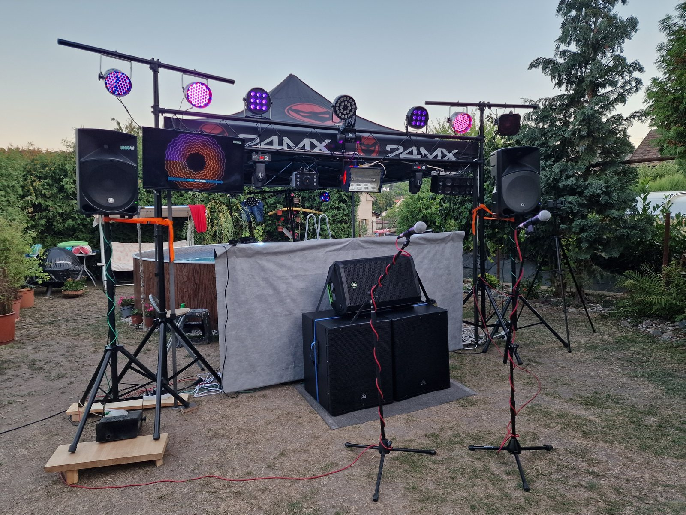
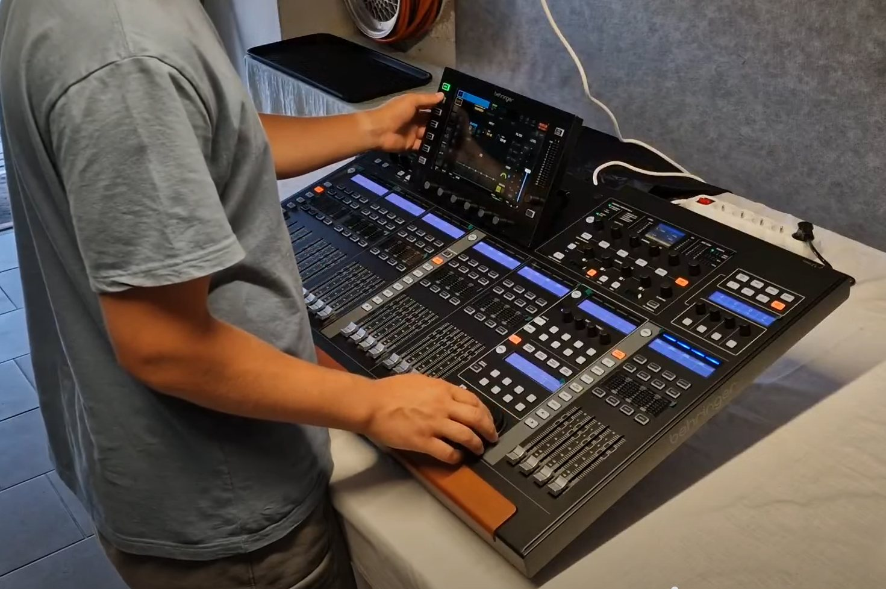
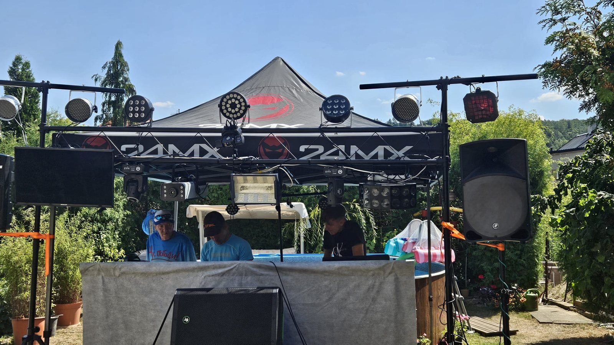
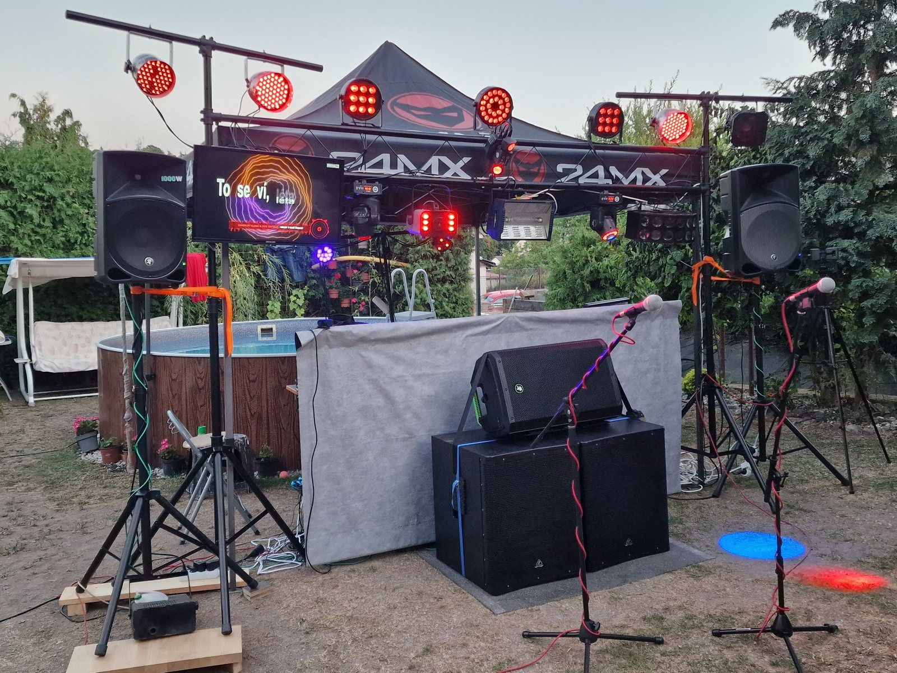
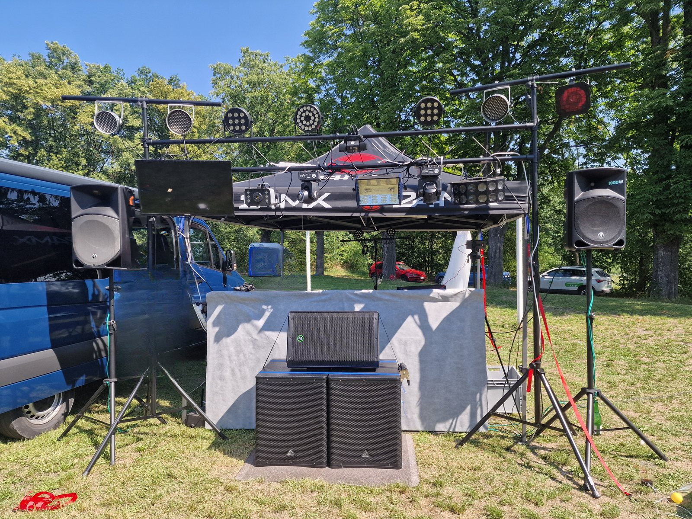
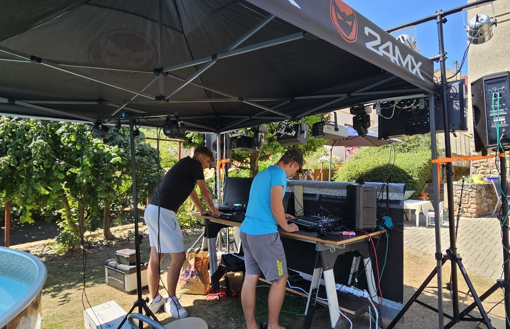
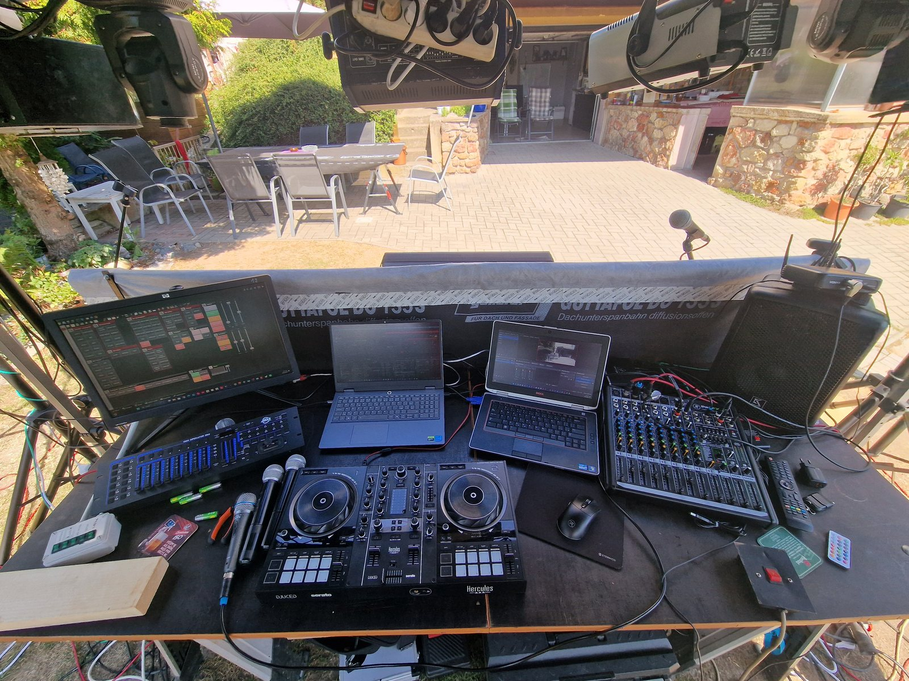
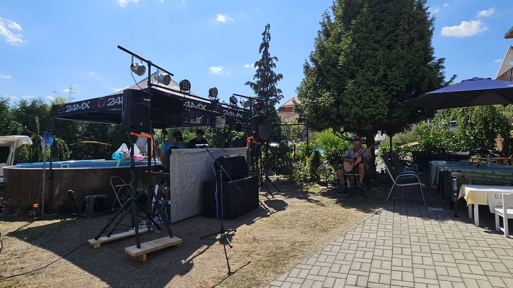
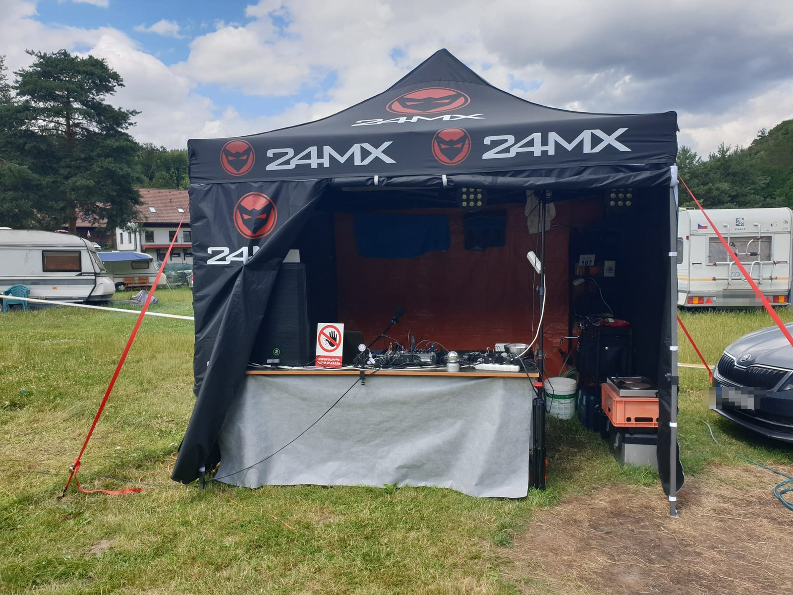
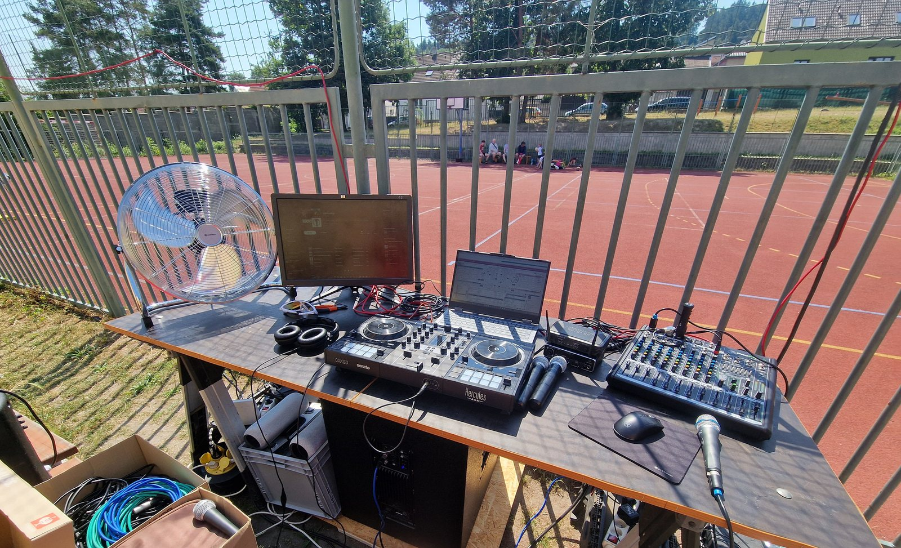
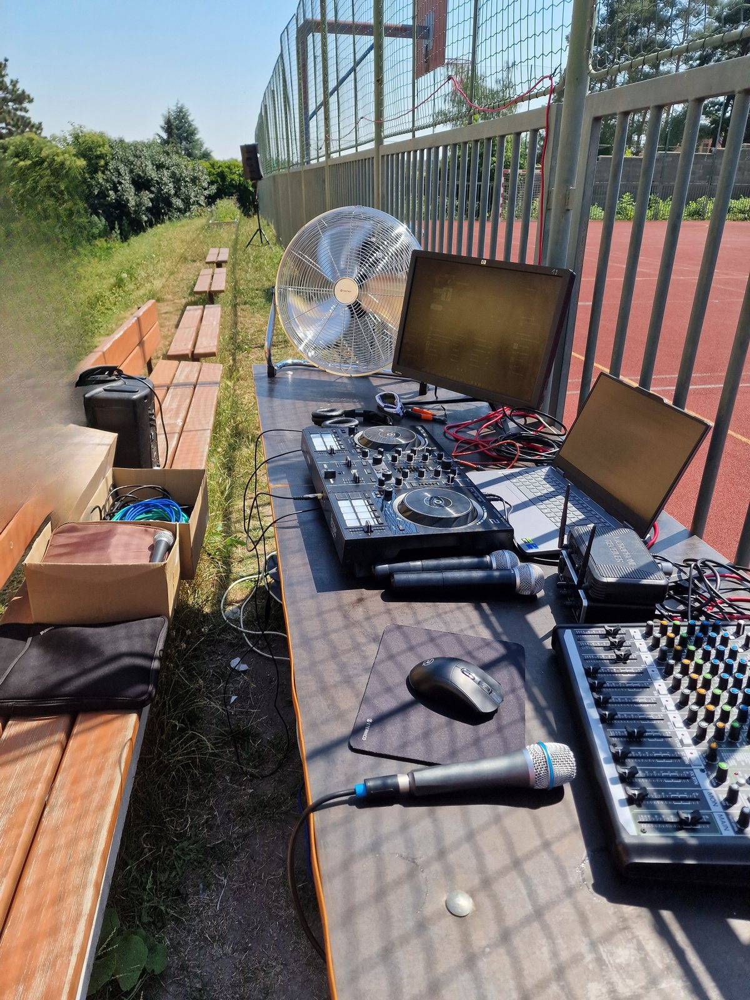
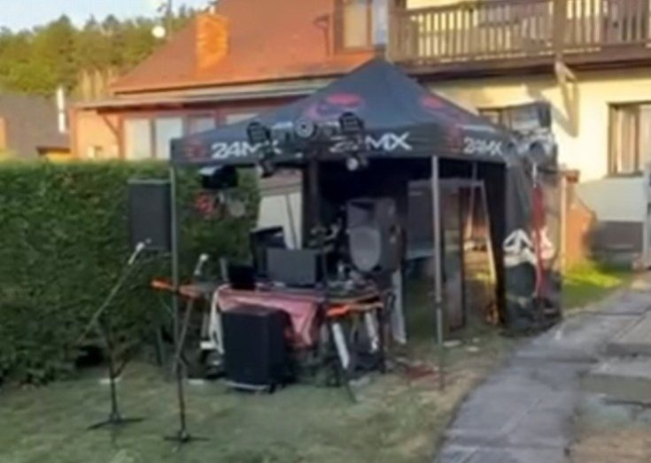
Další fotky přidávám průběžně na Instagram.
O mně
Jmenuju se Matěj, jsem z Kladna a hraju pod jménem DJ MANTYZ. Jezdím svatby, oslavy a firemní večírky po Kladensku, v Praze a po Středočeském kraji.
Aparát si vozím vlastní, postavím ho i sklidím a celý večer si u něj hlídám zvuk, světla i mlhu. Nemusíte shánět zvukaře, osvětlovače a DJe zvlášť — domluvíte se na všechno se mnou. Na větší akci se mnou občas jede kamarád na pomoc s technikou, ale domluva i hraní jsou vždycky na mně.
Na parketu koukám, kdo zrovna tancuje, a podle toho vybírám další skladbu. Pouštím je celé — svatba není klub, kde písnička zmizí po osmi taktech do dalšího přechodu. A kdo si přijde říct o svoji, tomu ji pustím.
Hudbu pouštím ve vysoké kvalitě z placené služby, ne staženou z YouTube. Na velkém aparátu je ten rozdíl slyšet — a v sále ho pozná i ten, kdo by o sobě řekl, že hudbě nerozumí.
Časté dotazy
Kladno a okolí do 30 kilometrů mám v ceně — to je i Praha, Slaný, Beroun nebo Rakovník. Dál to záleží na domluvě: když termín i cesta vyjdou, dojedu i dál, orientačně za 10 Kč za kilometr navíc.
Nejen můžete, já o to stojím. Před akcí si projdeme, co chcete slyšet určitě, co se hrát nemá v žádném případě a na co bude první tanec. Zbytek vybírám podle toho, jak se sál chytá.
Jednoho nebo dva muzikanty ano — třeba kytaristu se zpěvem k obřadu nebo k večeři, to už jsem dělal. U větší kapely se domluvíme podle toho, co potřebuje; na to už je potřeba víc techniky a je lepší vědět to s předstihem.
Mám. Vozím obrazovku s texty a mikrofony, takže si hosté můžou zazpívat. Řekněte mi to předem, ať to na místě připravím — na svatbě se to hodí spíš na pozdější večer, až se lidi rozjedou.
Uvnitř počítejte zhruba se třemi krát dvěma metry na pult a bedny, venku s plnou sestavou spíš s pěti krát čtyřmi — samotná rampa se světly má přes čtyři metry. Ideální je přívod 400 V / 16 A. Zahraju i z běžné 230V zásuvky, ale pak musím část světel a efektů nechat vypnutou. Pošlete mi fotku prostoru a řeknu vám, jak to tam postavím.
Hraju, jen potřebuju vědět předem. Technika musí být pod střechou — bedny mají papírové membrány a déšť jim nesvědčí. Menší stan vozím vlastní, vejde se pod něj ale jen pult. Aby byla v suchu i rampa a bedny, je potřeba velký stan nebo pergola přes celou sestavu.
Klidně do rána. Řídím se tím, do kolika se smí v místě konání hrát — to si zjistíme předem. Když akce začíná odpoledne, hraní do třetí nebo do čtvrté není nic neobvyklého.
Tak, aby bylo postavené a odzvučené dřív, než dorazí hosté — u plné sestavy s rampou a stanem to znamená několik hodin před začátkem. Přesný čas si domluvíme podle místa a podle toho, co všechno budu vézt.
Termín rezervuju po zaplacení zálohy 2 000 Kč převodem, zbytek platíte v hotovosti na konci akce. Když akci zrušíte víc než měsíc dopředu, zálohu vracím.
Moderování celého večera nenabízím. Pár organizačních vět do mikrofonu — kam se jde, co bude následovat, kdo má slovo — samozřejmě řeknu.
Svatby se domlouvají klidně rok dopředu, takže čím dřív, tím líp. Ale zkuste napsat i na poslední chvíli — termín může být volný.
Kontakt
Svatby se domlouvají i rok dopředu, tak se ozvěte klidně s předstihem. Na poptávku z formuláře odpovídám do 24 hodin — na e-mail a Instagram se dostanu později, takže když spěcháte, napište sem nebo rovnou zavolejte.